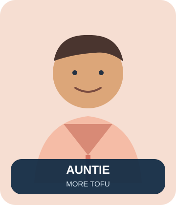
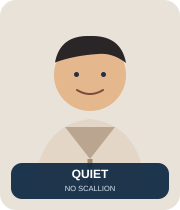

Craving Kitchen
CK v0.3 線上美術 source of truth：三位可選醫師、診間空間、Cooking Mode、麻婆豆腐道具，以及六位病人 NPC。GitHub web build 使用輕量 SVG，完整高解析 raster artwork 保留在最終交班封包。


Game Portraits




核心美術規則： Cooking Mode 必須仍看得出是同一間診間；電腦、印表機、藥櫃、洗手台、病人椅都要「轉職」成料理工作站的一部分，不能改成普通餐廳。
Public repository boundary：公開 GitHub 只放衍生遊戲美術，不放原始真人照片。
Public repository boundary：公開 GitHub 只放衍生遊戲美術，不放原始真人照片。